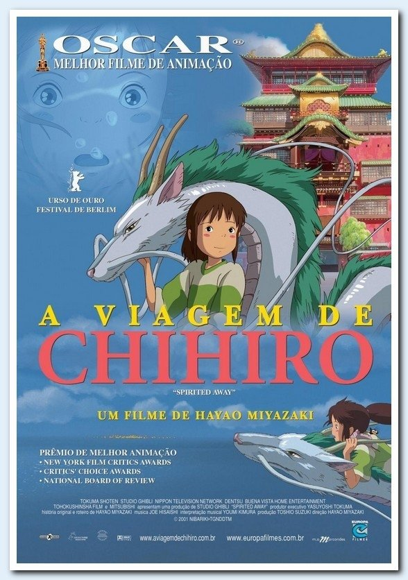

Tábata Lisbôa
Nerd
Carioca, urban sociologist and a ruby newb programmer I decided it was time to learn a craft. One that I would have fun working with. Le Wagon etc etc
My Fav Movies
|  |  |
|
Concerning Violence (2014)Created by Göran Olsson "[it] is both an archive-driven documentary covering the most daring moments in the struggle for liberation [...], as well as an exploration into the mechanisms of decolonization through text from Frantz Fanon’s The Wretched of the Earth." |
A Viagem de Chihiro (2001)Written and directed by Hayao Miyazaki, of Studio Ghibli, it's a japanese coming-of-age tale of ten-year-old Chihiro Ogino. |
Her (2013)"In the near future, [...] a complex, soulful man who makes his living writing touching, personal letters for other people [...] becomes intrigued with a new, advanced operating system, which promises to be an intuitive and unique entity in its own right." |